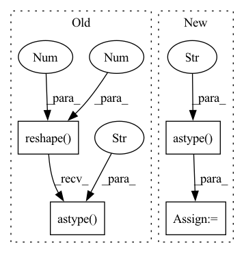

Pattern ID :20820
Before Change
query_id, query_embedding = query.query.uid, embeddings[0]
document_ids, document_embeddings = [doc.uid for doc in query.documents], embeddings[1:]
query_embedding = np.asarray(query_embedding).reshape(1, -1).astype("float32" )
document_embeddings = (
np.asarray(document_embeddings).reshape(-1, model.index.d).astype("float32")
)
After Change
ids_to_index.append(doc_id)
embeddings_to_index.append(doc_embedding)
ids_to_index = np.asarray(ids_to_index).astype("int64")
embeddings_to_index = np.vstack(embeddings_to_index).astype("float32" )
model.index.add_with_ids(embeddings_to_index, ids_to_index)
// Ensure that the query is not in the index when we search.
// https://github.com/facebookresearch/faiss/wiki/Special-operations-on-indexes//removing-elements-from-an-indexIn pattern: SUPERPATTERN
Frequency: 3
Non-data size: 4
Instances Fragment ID: 67126022
Project Name: pathwaycommons/semantic-search
Commit Name: b402cfbb5d7bf0178812f477c074d9b312ee56ea
Time: 2021-02-26
Author: johnmgiorgi@gmail.com
File Name: semantic_search/main.py
M Class Name: AnonimousClass
N Class Name: AnonimousClass
M Method Name: query(1)
N Method Name: query(1)
M Parent Class:
N Parent Class:
M File Name: semantic_search/main.py
N File Name: semantic_search/main.py
M Start Line: 91
M End Line: 130
N Start Line: 89
N End Line: 107
Before Change
coefficients = operator.raw_operator.coef_.transpose().astype("float32")
if len(coefficients.shape) == 1:
coefficients = coefficients.reshape(-1, 1)
intercepts = operator.raw_operator.intercept_.reshape(1, -1).astype("float32" )
return LinearModel(operator, coefficients, intercepts, device, is_linear_regression=True)
After Change
if np.ndim(intercepts) == 0:
intercepts = np.array(intercepts, dtype="float32")
else:
intercepts = intercepts.reshape(1, -1).astype("float32" )
return LinearModel(operator, coefficients, intercepts, device, is_linear_regression=True)
Fragment ID: 67126024
Project Name: microsoft/hummingbird
Commit Name: c38178c4d1ee9927827a361daadcc5f4a7357fb2
Time: 2022-08-31
Author: 56846628+RomanBredehoft@users.noreply.github.com
File Name: hummingbird/ml/operator_converters/sklearn/linear.py
M Class Name: AnonimousClass
N Class Name: AnonimousClass
M Method Name: convert_sklearn_linear_regression_model(3)
N Method Name: convert_sklearn_linear_regression_model(3)
M Parent Class:
N Parent Class:
M File Name: hummingbird/ml/operator_converters/sklearn/linear.py
N File Name: hummingbird/ml/operator_converters/sklearn/linear.py
M Start Line: 82
M End Line: 82
N Start Line: 88
N End Line: 94
Before Change
)
coefficients = operator.raw_operator.coef_.transpose().astype("float32")
intercepts = operator.raw_operator.intercept_.reshape(1, -1).astype("float32" )
multi_class = None
loss = None
if hasattr(operator.raw_operator, "multi_class"):After Change
if np.ndim(intercepts) == 0:
intercepts = np.array(intercepts, dtype="float32")
else:
intercepts = intercepts.reshape(1, -1).astype("float32" )
multi_class = None
loss = None
if hasattr(operator.raw_operator, "multi_class"): Fragment ID: 67126026
Project Name: microsoft/hummingbird
Commit Name: c38178c4d1ee9927827a361daadcc5f4a7357fb2
Time: 2022-08-31
Author: 56846628+RomanBredehoft@users.noreply.github.com
File Name: hummingbird/ml/operator_converters/sklearn/linear.py
M Class Name: AnonimousClass
N Class Name: AnonimousClass
M Method Name: convert_sklearn_linear_model(3)
N Method Name: convert_sklearn_linear_model(3)
M Parent Class:
N Parent Class:
M File Name: hummingbird/ml/operator_converters/sklearn/linear.py
N File Name: hummingbird/ml/operator_converters/sklearn/linear.py
M Start Line: 42
M End Line: 42
N Start Line: 43
N End Line: 49